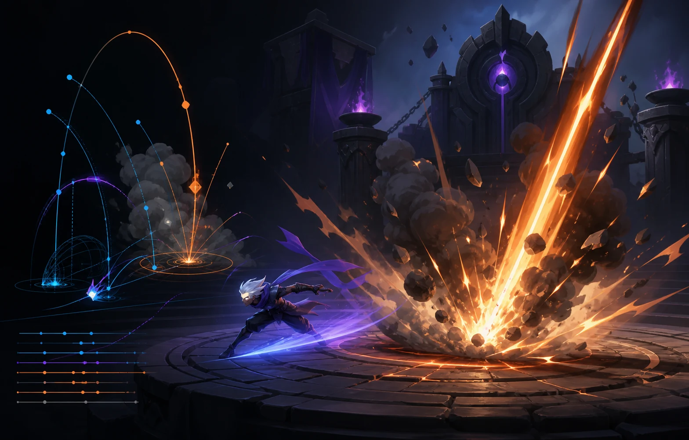
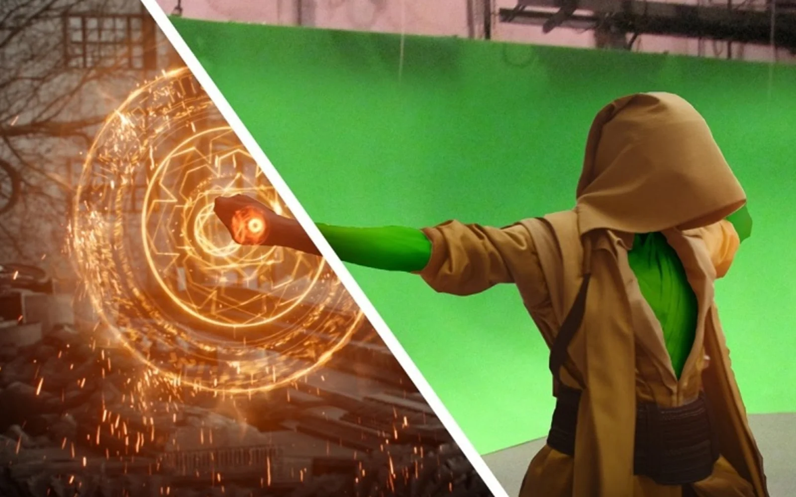

VISUAL EFFECTS / DIGITAL IMAGE MAKING
视觉特效让不可见的计算，成为可信的画面
视觉特效连接艺术想象、物理规律与数字技术。它让火焰、水流、光影与空间突破现实边界，使不可见、不可达或尚未发生的景象，以可信而富有感染力的方式出现在画面中。
VISUAL EFFECTS / DIGITAL IMAGE MAKING
视觉特效连接艺术想象、物理规律与数字技术。它让火焰、水流、光影与空间突破现实边界，使不可见、不可达或尚未发生的景象，以可信而富有感染力的方式出现在画面中。
01 / INDUSTRY & PRACTICE
视觉特效并不等同于“爆炸”或影视后期。它围绕运动、材质、光线、空间和时间建立视觉规律，再依据媒介特性决定表现方式：游戏强调实时反馈与性能，动画强调风格和叙事，影视强调与摄影素材的可信整合。
实际工作横跨三维资产、粒子与动力学、灯光渲染、跟踪抠像和数字合成。不同项目会使用不同工具，但共同目标都是让复杂过程变得可控、可迭代，并服务于最终画面。

REAL-TIME GAME FX
游戏特效必须在实时引擎中运行。设计师需要把攻击范围、命中反馈、角色状态和环境变化转化为清晰的粒子、轨迹、材质与屏幕效果，同时控制性能与视觉层级。
ANIMATION EFFECTS
动画特效不仅模拟现实，还要服从角色动作、镜头节奏和美术风格。水、火、烟、尘、风、魔法与气氛可以被夸张、简化或重新设计，成为叙事的一部分。

FILM & EPISODIC VFX
影视特效从实拍素材出发，通过跟踪、抠像、数字资产、模拟、灯光、渲染与合成，补充或重建摄影机难以直接获得的环境、角色和事件。最终效果需要延续原镜头的透视、光线与质感。
02 / FOUNDATIONAL ABILITIES
视觉特效不是对单一软件的熟练操作，而是持续观察、拆解画面并用技术验证视觉判断。基础能力通常从形体、动态、光影和影像关系出发，再进入不同媒介的制作管线。
ASSET & LOOK DEVELOPMENT
建立模型、材质和基础灯光，理解形体、表面和尺度如何影响最终画面。
建模 · 纹理 · 材质 · 灯光FX SIMULATION
观察真实运动规律，再通过可控参数设计粒子、流体、破碎、布料、毛发与群集效果。
粒子 · 流体 · 刚体 · 布料与毛发TRACKING & EXTRACTION
分析摄影机、物体和人物运动，从拍摄素材中提取可供数字制作继续使用的空间与遮罩信息。
Tracking · Matchmove · Keying · RotoscopingRENDERING & COMPOSITING
组织渲染分层、颜色、景深与光线关系，使不同来源的画面元素形成统一的空间和质感。
Render Passes · Color · Depth · CompositingTECHNICAL THINKING
用节点逻辑、基础脚本和问题拆解提升效率，并在导演、美术、动画、程序和后期团队之间清晰沟通。
节点逻辑 · 基础脚本 · Pipeline · 团队协作Visual Effects and Technical Animation BFA
特效模拟 / 技术动画 / 合成Animation & Visual Effects BFA
三维制作 / 视觉特效 / 影视管线Visual Effects and Motion Graphics BA (Hons)
特效流程 / 合成 / Motion GraphicsComputer Animation & Visual Effects BA (Hons)
三维动画 / 程序化内容 / 跟踪与合成Computer Animation and Visual Effects BA (Hons)
动画 / 数字影像 / 视觉特效Digital Art and Animation BFA
三维艺术 / 动画 / 团队制作3D Games Art and Design BA (Hons)
实时资产 / 游戏美术 / 引擎制作Visual Effects MA / MFA
高级模拟 / 技术研究 / 专业项目Animation & Visual Effects MFA
视觉特效 / 动画制作 / 专业作品集Visual Effects MA
数字合成 / 研究实践 / 影视制作Visual Effects MA
特效技术 / 实践研究 / 大型项目Computer Animation & Visual Effects MSc
计算机图形 / 技术制作 / 团队项目Games Art and Design MA
实时艺术 / 专业方向 / 项目开发Computer Games: Art & Design MA
游戏艺术 / 技术实践 / 实验项目注：课程名称、方向与模块可能调整，申请时请以院校官网当年信息为准。院校推荐不按排名先后排列。